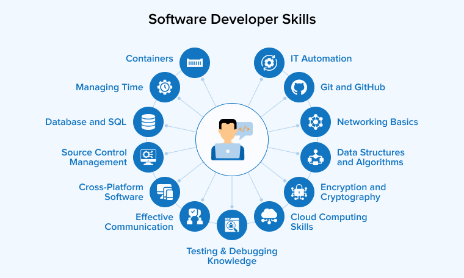

Skills Analysis & Evidence

This section evaluates the technical and professional abilities that I possess already and how they are going to be used in my new career goal as a Software Engineer. It is a skills gap analysis and a display of evidence that was gained through academic work, workshops, and extracurricular learning..
Current Skills & Experience
- Python (Intermediate): Used in class assignments for data manipulation, scripting, and mini-projects.
- JavaScript (Basic): Used in front-end web development exercise and web-based classes.
- SQL: Trained to query a database to analyze organized data.
- Git & GitHub: Used version control and code collaboration using repositories in class assignments and this web portfolio.
- Teamwork: Served as group leader and note taker during workshops, assisting in helping contribute to collaborative problem-solving.
- Communication: Conducted group presentations and participated in peer review exercises.
- Time Management: Coordinated synchronized balanced deadlines throughout the modules while balancing external CPD.
Workshop & Module Evidence
Workshops like "Design Thinking" and the "Testing workshop" developed my soft skills through group work and role-playing. With the testing workshop, I gained confidence in the idea-sharing process, handling tasks, and providing structured feedback.
By testing workshop, from "Working in Data" to a some extent, I also developed sensitivity towards ethical obligations and the need for accuracy in the software processes, as per industry standards.
Skill Gap Reflection
While I believe in Python and teamwork, I am aware that I require improvement on my front-end as well as full-stack skills. Furthermore, I am hoping to improve in Agile development methodologies, test-driven development, and communication with stakeholders.
Actionable Skill-Building Strategy
- Complete other LinkedIn Learning courses (e.g., JavaScript Essentials, Agile Foundations)
- Participate in a GitHub open-source repository with proper documentation and pull requests
- Keep practicing coding problems on LeetCode every week
- Simulate interview-style whiteboard problems to improve real-world thinking
This analysis makes my development plan industry ready, strategic, and focused for entry-level software engineering positions.